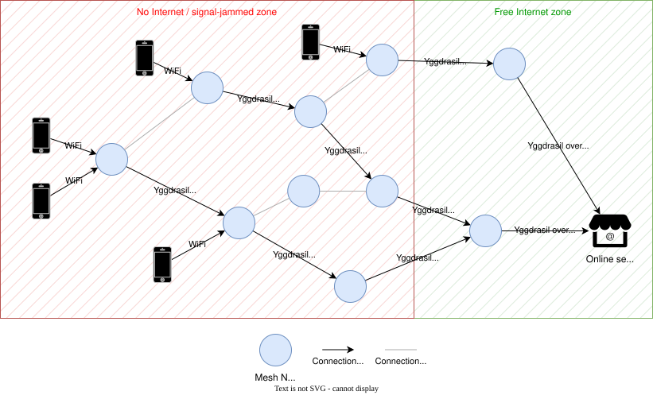

YggMesh is open-source firmware that turns low-cost travel routers into a self-organizing, zero-configuration encrypted network.
Nodes discover each other automatically and start routing the moment they power on. The moment at least one node gets internet access, the whole network does too.
